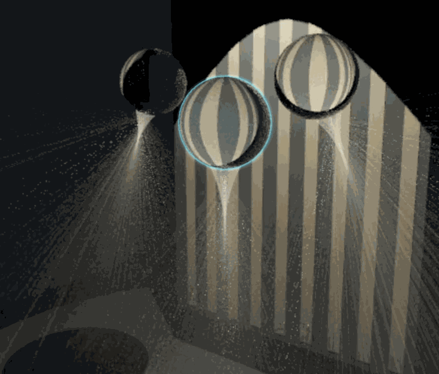

 ResearchDesktop + VideoMotion tour · speeds labeledConnections
ResearchDesktop + VideoMotion tour · speeds labeledConnectionsRadianceLab
Graphics · ResearchAn interactive CPU/GPU renderer for exploring light transport in a variety of scenes. Switch among ten selectable modes spanning established methods and photon estimators from my own research, edit materials and media in place, inspect paths and intermediate structures, then set up the camera and refine a beauty shot.
Fun factIts unpublished photon hourglass sweeps rays refracted through a glass sphere into a ruled sheet; a camera ray gathers their light by crossing that sheet analytically, without a beam radius to blur the caustic.